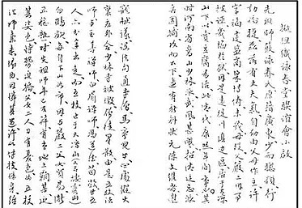
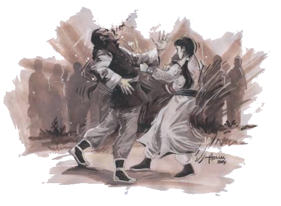
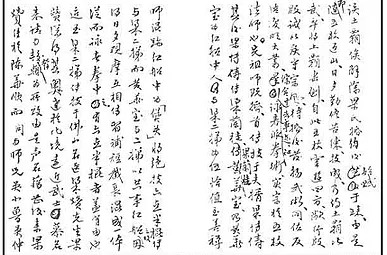
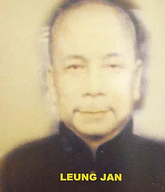
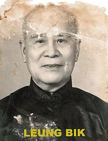
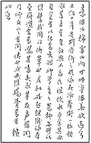

Sobre o Estilo: Wing Chun Kuen
Escrito por Thomas Pinheiro (texto original de Yip Man, tradução por Thomas Lo)
Como muito se fala sobre a história do Wing Chun; a academia Pinheiros em nome do sifu Thomas Pinheiro achou relevante escrever a história do estilo segundo o Grande Mestre Yip Man, em texto escrito pelo próprio punho de Yip Man; a seguir os originais escritos e a tradução destes pelo Mestre Lo Siu Chung, com ajuda do sifu Thomas Pinheiro:
Anuncio de planejamento da associação de Wing Chun. O Grande Mestre Yip Man de Wing Chun escreve; a origem do estilo é da provincia de Kwantoon, Yin Wing Chun desde criança se mostrou inteligente e rápida. Ela tinha carater como homem, forte. Quando adolescente os pais já decidiram que ela se casaria com um comerciante de sal da provincia de Fu Kin; ele se chamava Leung Bok Chau. Logo a mãe de Yin Wing Chun faleceu; o pai, Yim Yee, por causa de um acontecido, fora acusado falsamente e quase fora preso, por isso os dois fugiram para uma outra provincia, perto de Sei Chun Kwai Chon, estabelecido embaixo da montanha Tai Leung; como um fabricante de tou fu (queijo de soja); isto referente a época do imperador Hon Hei, dinastia Ching.

Na mesma época o templo Shaolin de Ho Nan, que ficara famoso por arte marcial, causava medo ao governo, que então mandou militares que cercacem o templo, porém não obtiveram sucesso ao invadir, devido às defesas do templo; por coincidencia, um oficial concursado que quiz se aproveitar da situação, chamado Chan Wan Wei, formulou um plano de ataque, conseguiu subornar um monge do templo Shaolin, chamado Ma Lin Ii e um grupo de discipulos internos.
Cercaram e atearam fogo em volta do templo e combinaram com os militares então a invasão do templo. O templo Shaolin foi então destruído, os monges e discipulos fugiram para todos os cantos, os mais famosos monges, Ng Mui, Shim Simm, Pak Mei e os discipulos Fong Do Tai e Miu Hin fugiram separadamente sendo que Ng Mui estabeleceu-se na montanha Tai Leung (Tai Chi Xia Sum), no templo Pai Hou.
Como Ng Mui descia a montanha para fazer compras, acabou conhecendo Yim Wing Chun e ficaram amigas. Naquela época a grande mestra Yim Wing Chun chegou à idade de casamento (mais ou menos 18 anos). Na mesma cidade tinha um bandido rico, que a paquerava por sua beleza incomum, e com a influencia dele e força, queria casar-se de qualquer maneira com ela.
O pai e a filha ficaram preocupados, e a situação foi percebida pela monja Ng Mui. Ao saber de todo o caso, a monja levou Yim Wing Chun com ela, prometendo ensinar a técnica para ela poder se defender, e planejou também enganar por hora o bandido, pedindo que desmarca-se o casamento com Leung Bok Chau. A grande mestra do Wing Chun foi morar com Ng Mui no templo e treinou todo dia com muita força de vontade, conseguindo dominar a técnica e pedir então para lutar com o bandido. No final, o bandido ficou sériamente machucado e acabou desistindo de Yim Wing Chun.
Desde aquela época, a monja começou a viajar, como peregrina. Orientou a grande mestra Yim Wing Chun a desenvolver a técnica e seguir as regras e moral de Shaolin. Depois que se casou, Yim Wing Chun pode ir passando a técnica, sendo revolucionária.
  Resumindo, o estilo Wing Chun foi fundado pela Monja Ng Mui, a grande mestra Yim Wing Chun depois de casar passou a técnica para o marido, Leung Bok Chau, e o marido passou para Leung Kwai Lan, que por sua vez a ensinou para Wong Wah Bo, ator de ópera que morava em um barco, e que sempre viajava com Leung Yee Tai, coincidentemente, o monje Chi Simm se escondera no meio dos atores de ópera e morava num barco como cozinheiro e acabou passando as técnicas de luk dim bum kwan (seis técnicas e meia do bastão) para Leung Yee Tai.
Leung Yee Tai e Wong Wah Bo sempre trocavam ideias e técnicas entre eles, por isso o wing chun tem o uso do luk dim bum kwan. Leung Yee Tai passou a técnica de Wing Chun para um famoso médico, Dr. Leung Jan da cidade de Fatsan. Dr. Leung Jan estudou e praticou fundamentalmente a técnica de inúmeros lutadores de outros estilos, através de desafios ou conhecendo outros estilos.
  Ele conseguiu vencer todos os desafios, por isso ficou um lutador tão famoso. Leung Jan ensinou então a Chan Wah Shun. Eu (Yip Man) e meus irmãos de estilo, Ng Siu Lou, Ng Chung So, Chum Yu Min e Lui Yu Tze, que aprenderam com Chan Wah Shun a mais de uma década treinando, nós não queremos esquecer nossa origem e quero sempre lembrar, comemorar o ensino da grande mestra (Yim Wing Chun), com essa associação poder ligar todo mundo que segue a mesma linha, por isso eu começo a organizar a mesma associação, eu peço aos amigos e praticantes de Wing Chun do mesmo sentimento a desnvolverem nosso estilo.
Sinceramente, Yip Man.